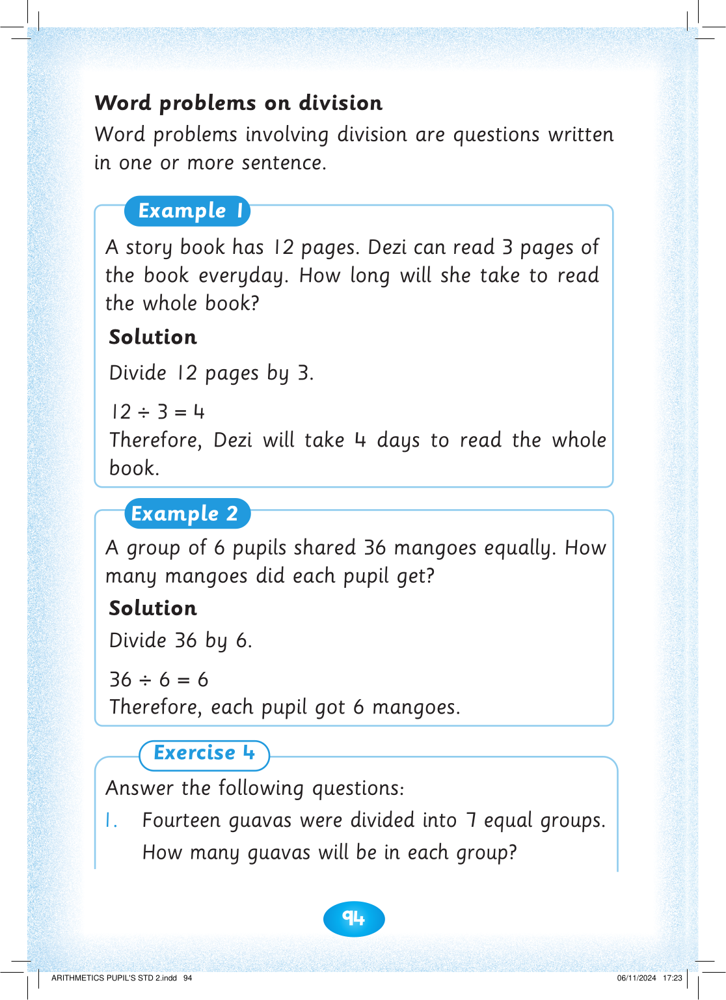
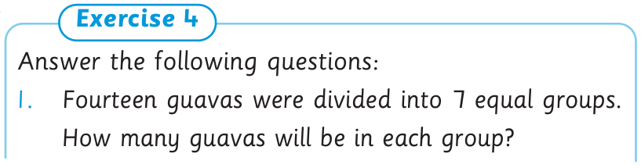

94



Word problems on division

Word problems involving division are questions written

in one or more sentence.
Example 1
A story book has 12 pages. Dezi can read 3 pages of the book everyday. How long will she take to read the whole book?
Solution
Divide 12 pages by 3.
12÷3=4
Therefore, Dezi will take 4 days to read the whole book.
Example 2
A group of 6 pupils shared 36 mangoes equally. How many mangoes did each pupil get?
Solution
Divide 36 by 6.
36÷6=6
Therefore, each pupil got 6 mangoes.
Exercise 4
Answer the following questions:
1. Fourteen guavas were divided into 7 equal groups.
How many guavas will be in each group?


ARITHMETICS PUPIL'S STD 2.indd 94
06/11/2024 17:23